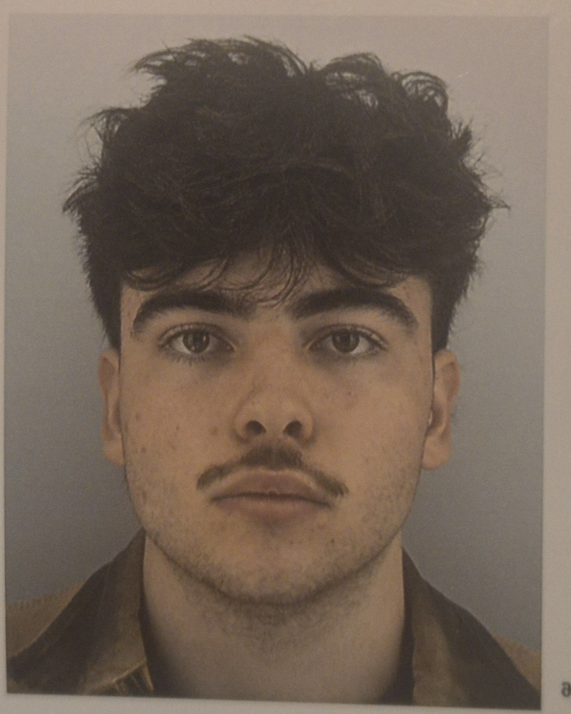

Alban
Puyou
Génie Électrique & Informatique Industrielle
Actuellement en première année de BUT GEII à l'IUT de Bordeaux,
je suis passionné par l'électronique et les manipulations diverses
dans ce domaine.
Je suis particulièrement intéressé par la conception de circuits,
l'analyse et l'exploitation de signaux dans leur adaptation à des systèmes.
Mon objectif est de comprendre et maîtriser les évolutions ainsi que
la dimension technique dans l'électronique embarqué.
Mon projet est d'intégrer le parcours ESE en deuxième année, d'effectuer
un stage à l'étranger ainsi qu'un contrat en alternance en 3e année.
En quête de défis et de responsabilités, je suis impatient de rentrer
dans le monde du travail pour apporter ma pierre à l'édifice.
